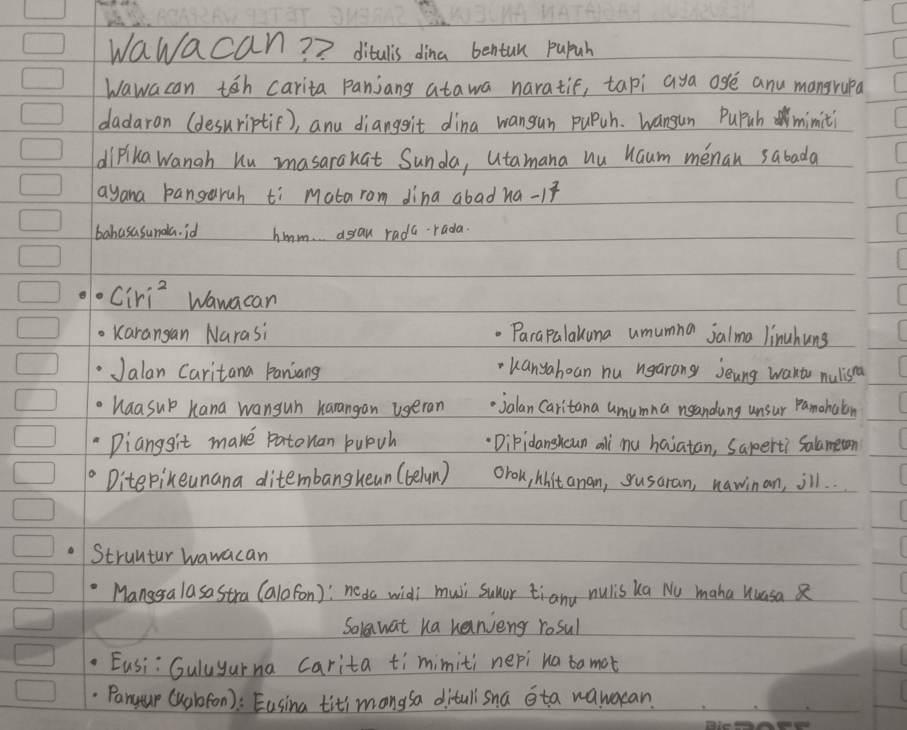
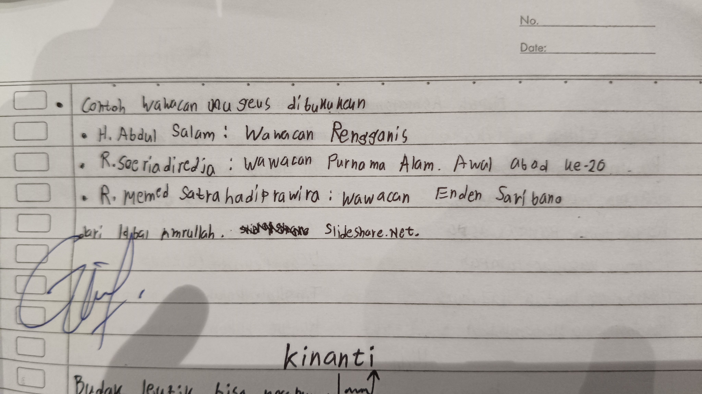

Pangajaran tentang Carpon
Pangartian Carpon, Ciri-ciri, Unsur Instrinsik Ekstrinsik, Analasis Carpon Oknum, Carpon Buatan, Jeung Lain-lain.


Pangartian Carpon, Ciri-ciri, Unsur Instrinsik Ekstrinsik, Analasis Carpon Oknum, Carpon Buatan, Jeung Lain-lain.
Pangartian Biografi, Struktur, Padika Biografi, Biografi D.K.Ardiwinata jeung Biografi Sorangan.